←Episodio 2: Fuera del tiempo→
El Episodio 2 comienza con Max durmiendo. Despiértala y podrás caminar por su habitación. Hay varios objetos con los que puedes interactuar aquí, pero el más importante es su planta cerca de la ventana. Riégala, porque si no lo haces, morirá.
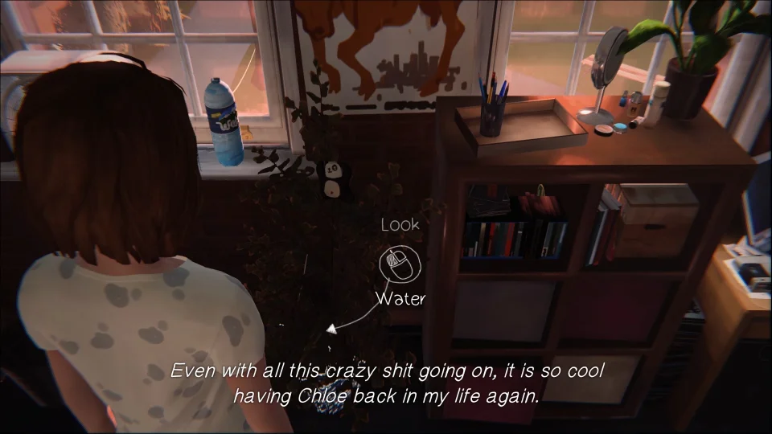Una vez que estés lista para irte, toma sus artículos de ducha que están en su armario a la derecha de la puerta. Sal de la habitación y ve a las duchas, que están bajando por el pasillo y a la izquierda. Mientras estás en camino, verás a Alyssa. Ella es golpeada por un rollo de papel higiénico. Si te paras junto a ella y luego retrocedes en el tiempo, puedes advertirle que se mueva, lo cual es algo que recordará.
Después de salvarla, dirígete a las duchas. Habla con Kate, y una vez que hayas terminado, puedes entrar en una de las duchas y usarla. Mientras estás allí, Victoria y su amiga entrarán para acosar a Kate mientras te escondes. Eventualmente, todas se irán y podrás salir. El sitio web que Victoria escribió en el espejo puede ser borrado, lo cual hará que Kate se sienta mejor más tarde.
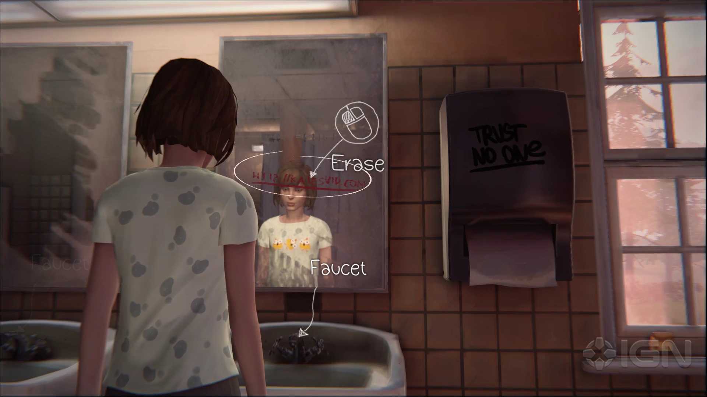Después de limpiarlo, puedes salir y regresar a tu habitación. Hay algunas pizarras en el pasillo con las que puedes interactuar, pero no es obligatorio. Una vez de vuelta en tu habitación, vístete y luego toma el libro de Kate. Está debajo de una de las muchas pilas de papeles aleatorios. Con el libro en la mano, ve a la habitación de Kate. Una vez dentro, no hables con ella todavía. En su lugar, dirígete al lado izquierdo de su habitación y toma una foto de su mascota.
Hay varias otras cosas en su habitación que puedes leer y que pueden ayudar a arrojar más luz sobre su personaje. Una de importancia es una tarjeta de su papá, que es un conocimiento valioso para más adelante en el Episodio. Cuando estés listo, dale el libro. Mientras hablas, tendrás que tomar una decisión sobre lo que ella hace. Kate está pasando por un momento difícil actualmente, así que mientras hablas, es de tu interés ser amable y comprensivo para que Kate se sienta reconfortada. Cuando finalmente termines, puedes salir de la habitación de Kate y dirigirte por el pasillo. Dana te llamará a su habitación, así que entra y habla con ella, y tomarás la decisión de ir o no a una fiesta del Vortex Club. Después de esa conversación, puedes hablar con algunas otras personas o simplemente irte. Sin importar lo que hagas, cuando hayas terminado en los dormitorios, sal por la puerta al final del pasillo.
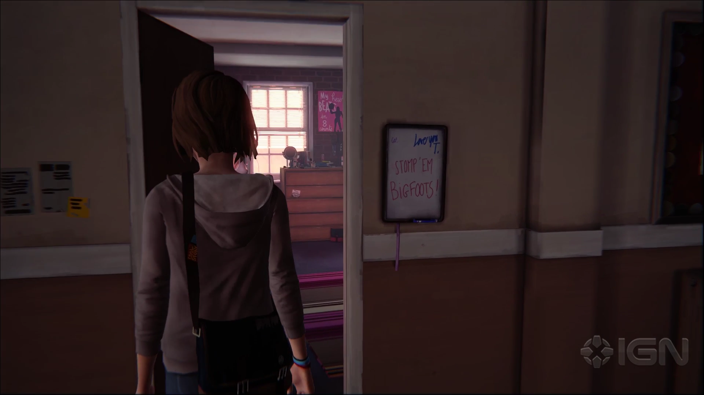Ahora que estás afuera, hay tres cosas que puedes hacer. Primero, dirígete hacia la derecha hacia el banco y el basurero. Puedes recoger la segunda foto aquí. Interactúa con la basura para colocar un pedazo de comida en el banco y atraer a la ardilla. Asegúrate de dar varios pasos hacia atrás desde el banco para que la ardilla se acerque.
Con la foto obtenida, hay tres personas con las que puedes hablar. La primera es el conserje, y la segunda es Taylor. Si hablas con ella, puedes aprender bastante sobre su vida personal. Lo importante es su mamá, y una vez que escuches sobre eso, puedes retroceder en el tiempo y mencionárselo para aprender aún más y hacerte más amigos cercanos. Una vez que hayas hablado con estas dos personas, dirígete hacia la salida. Cuando llegues allí, verás a Warren. Hay algunas cosas sobre las que pueden hablar, pero una elección importante es si vas a salir con él a ver una película. Una vez que hayas terminado, sal hacia el patio de la escuela. Se reproducirá una escena mientras caminas por el área, y luego tomarás el autobús hacia el Diner.
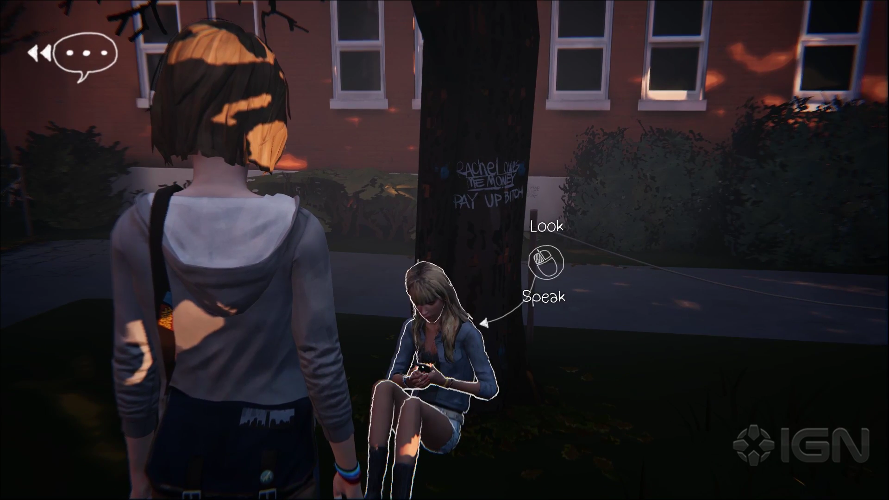El Diner es un lugar bastante concurrido, así que antes de entrar, vamos a ocuparnos de todo afuera. Primero, antes de entrar siquiera, asegúrate de mirar hacia arriba sobre la puerta del Diner para ver un letrero de ballena. Toma una foto de ello, ya que es la tercera foto opcional del episodio.
Con eso en mano, puedes dirigirte hacia la parte trasera del Diner. Un camino te llevará hacia un perro, que simplemente ladra, así que ve por el otro lado. Hay algunas personas con las que puedes hablar aquí, algunas de las cuales pueden ofrecer información valiosa sobre el mundo, especialmente la mujer sin hogar. Después de hablar con todos, dirígete hacia la cerca en la parte trasera detrás del Diner. Cuando te acerques, podrás tomar la cuarta foto opcional.
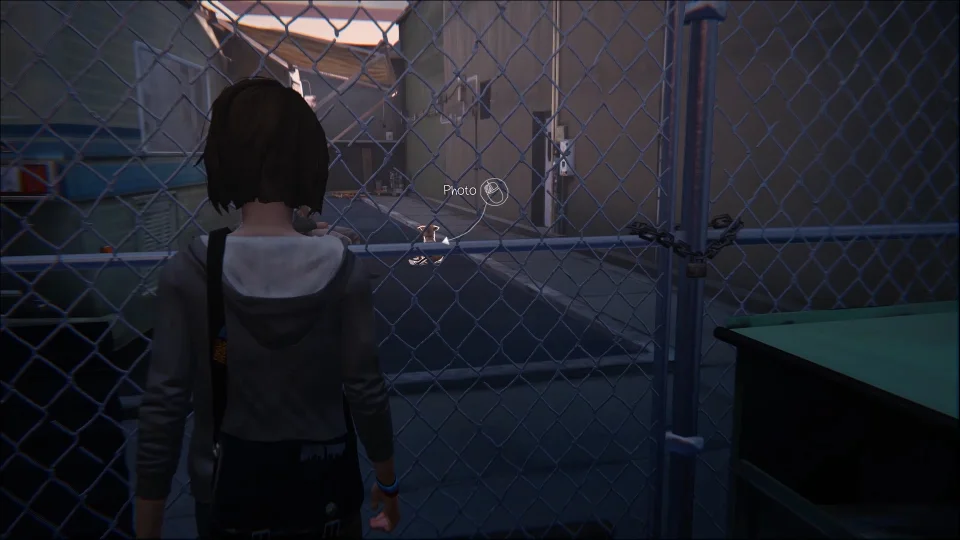Con la foto tomada y todos hablados, entra en el Diner. Dirígete hacia la izquierda primero y entra en el baño. Hay graffiti por todas partes, pero el importante es el graffiti blanco en el espejo. Toma una foto de él para obtener la quinta foto opcional.
Eso es todo para las fotos de esta área, así que regresa al Diner. Puedes hablar con varias personas aquí, aunque ninguna de ellas tiene diálogos importantes. Cuando estés listo para continuar, dirígete a uno de los últimos asientos en el Diner y siéntate.

Cuando lo hagas, la mamá de Chloe vendrá a hablar contigo por un tiempo, y luego te ofrecerá el desayuno. Mientras lo trae para ti, Chloe entrará en el Diner y se sentará. Mientras estás sentado allí, Chloe querrá que demuestres que tienes poderes. Ofreces adivinar lo que ella tiene en sus bolsillos. La primera suposición no importa, se supone que fallarás.
Después de que falles, ella sacará lo que tenía en sus bolsillos. Necesitarás memorizar detalles sobre cada artículo, ¡pero no te preocupes, lo hicimos por ti! (Llavero de panda, tiene 7 cigarrillos, tiene 86 centavos, recibió su boleto de estacionamiento a las 10:34 a.m) Después de tener éxito, ella pedirá aún más prueba. Te someterá a otra prueba, prediciendo los próximos 30 segundos.
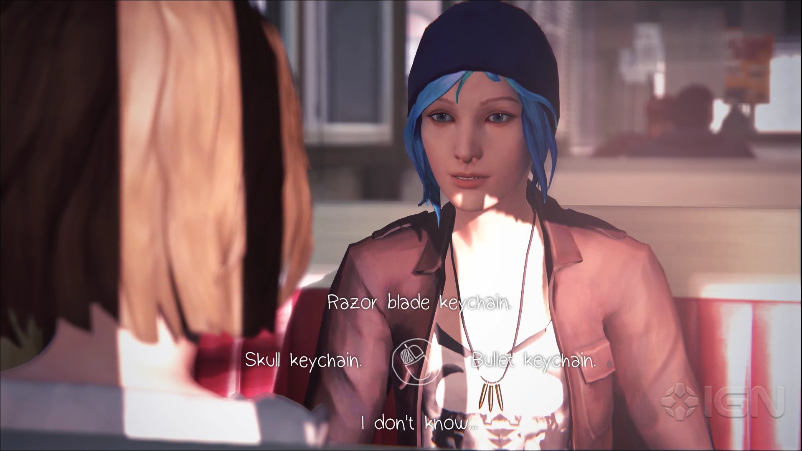Primero verás todo lo que sucede a tu alrededor y luego se lo contarás a Chloe. Las cosas que necesitas decirle son: El camionero deja caer su taza ... y su compañero se va ... y Joyce los detiene. La máquina de música se vuelve loca mientras una cucaracha se arrastra sobre ella. Después de que todo esto se haya hecho, Chloe querrá salir del Diner. Cuando te acerques a la salida, tu teléfono sonará y ocurrirá otra decisión importante. Puedes hablar con Kate, lo que molesta a Chloe, o ignorar el teléfono y salir.
La siguiente área es un viejo y divertido desguace. Chloe querrá que encuentres 5 botellas, pero mientras haces eso, también vamos a tomar algunas fotos. Una vez que estés libre para caminar, dirígete al viejo autobús. ¡Puedes tomar una foto de él! Esta es la foto opcional 6. Una de las primeras botellas también se encuentra cerca del autobús. Está colocada sobre un objeto rojo, que está sobre un armario. Primero debes interactuar con él, luego retroceder en el tiempo y usar la caja que está a la derecha para alcanzarla. La siguiente botella se encuentra en el capó de un coche. El coche se encuentra cerca del claro, donde hay algunos árboles y un área abierta de césped. Si tienes problemas para ver las botellas, asegúrate de mantener un ojo en las líneas blancas que rodean los objetos interactivos mientras caminas por la zona.
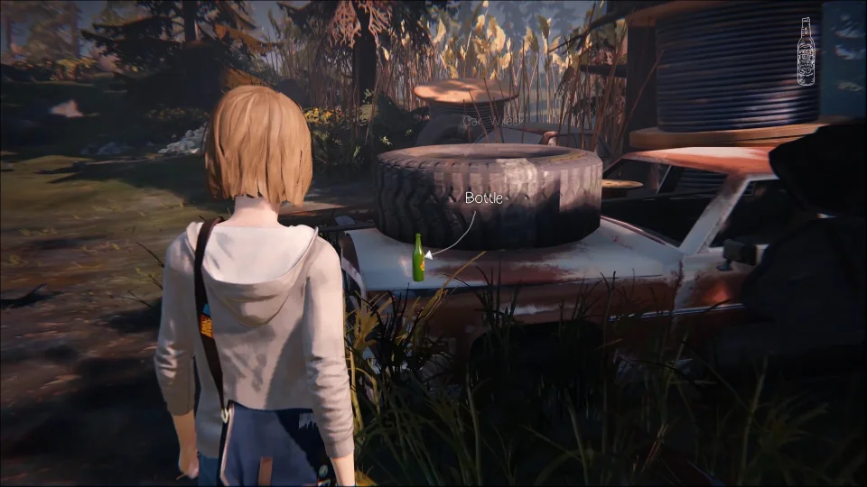Mientras estés cerca de esta área de césped, mira alrededor y verás un ciervo. Acércate a él, y Max hablará sobre él mientras el ciervo se aleja saltando. Síguelo mientras se adentra más en el área de césped y podrás tomarle una foto, ¡consiguiendo así la foto opcional 7!
Ahora que tenemos la foto, vamos a buscar la tercera botella. Esta botella está dentro de una pequeña choza. Puedes encontrar la choza cerca de las vías del tren que corren a lo largo de la parte trasera del desguace. Entra en la choza y encontrarás la botella dentro, junto con varios otros objetos que puedes revisar y leer. La cuarta botella se encuentra cerca de la choza, junto a una fogata. Camina alrededor de la parte trasera de la choza y notarás que cerca hay un pequeño sendero que atraviesa varios autos apilados. Toma la botella y cuando salgas, los carretes de alambre caerán, así que asegúrate de retroceder rápidamente y pasar junto a ellos.
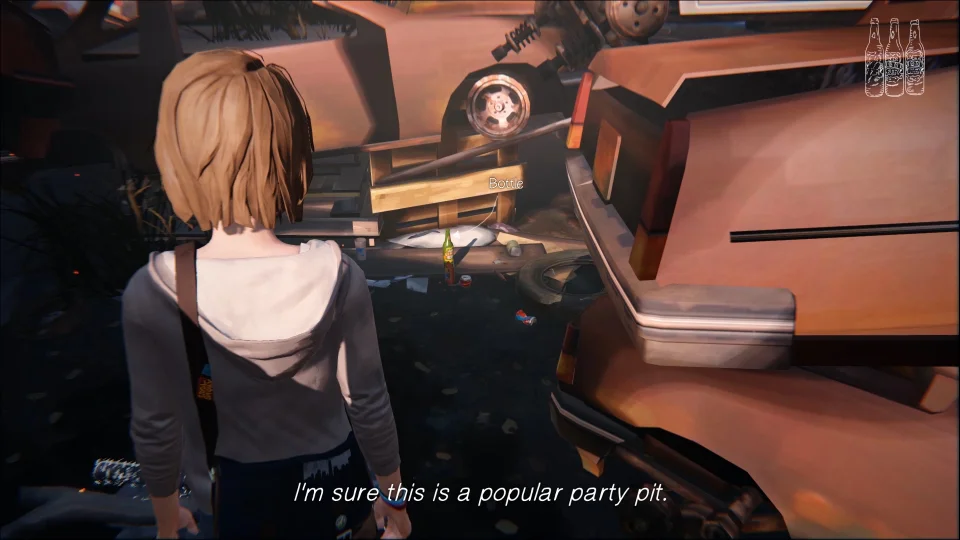La botella final está colocada en lo alto de un viejo barco. Aunque puede ser difícil de ver al principio, hay un pequeño sendero cerca del barco que lleva hacia arriba y alrededor del otro lado de la tabla de madera. Desde aquí, puedes levantar la tabla y usarla para llegar al barco. Toma la botella y luego regresa con Chloe. Ella las colocará y comenzará a disparar.
Permite que ella realice el primer disparo, luego retrocede en el tiempo y dile cómo ajustar su objetivo, lo cual para el primer disparo requiere que le digas que apunte un poco hacia la derecha. El segundo disparo requerirá que apunte hacia arriba. El siguiente disparo que ella quiere hacer es un tiro de habilidad. Si miras a la izquierda, hay un aro de neumático oxidado. Dile que dispare hacia él, y la bala se desviará para golpear la botella. El siguiente disparo es el último, y simplemente necesitas decirle que dispare al neumático del coche. Si tienes curiosidad, puedes decirle que dispare al tanque de gasolina para hacer explotar el coche, o incluso disparar al parachoques, lo que hará que la bala rebote y golpee a Chloe. Después de que las botellas sean destruidas, Max se desmayará.
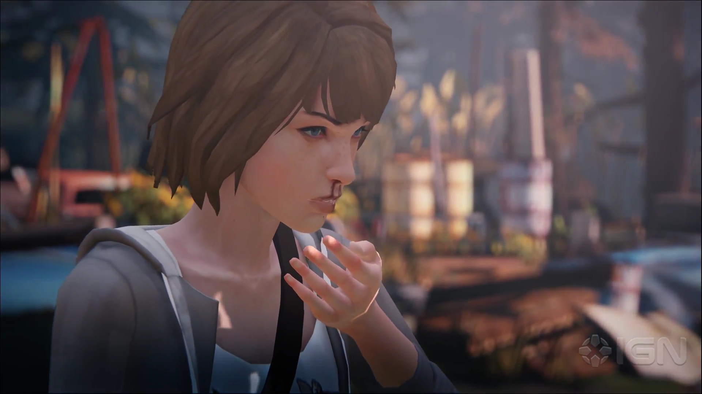
Cuando Max se despierte, hablarás con Chloe y luego te levantarás. Camina alrededor de su lado derecho y ¡podrás tomar una foto opcional! Después de tomar la foto, habla con ella y se reproducirá una escena mientras Frank aparece. Hay muchas cosas importantes que se dicen aquí, pero también hay una gran decisión que tomar. Si decides dispararle, la pistola no se disparará. Si no le disparas, él tomará la pistola.
Después de que se tome la decisión, tú y Chloe saldrán del desguace y se acostarán en las vías del tren. Si pensaste que algo malo sucedería a partir de esto, tienes razón. Después de que Max tenga otro episodio, volverá en sí y Chloe estará en peligro. Corre rápidamente por la rampa hacia ella, y encontrarás una palanca de hierro colocada en un bloque de cemento. Ahora tienes dos opciones. Hay un carrete gigante que puedes empujar, usando la palanca para mover las cuñas, lo que te permitirá empujar el carrete cuesta abajo, aplastando el dispositivo y moviendo las vías. También puedes usar la palanca para entrar al edificio aquí. Dentro de uno de los cajones hay un par de alicates. Llévalos hasta el cuadro de fusibles junto a las vías y úsalos para mover las vías de la manera no destructiva. Si comienzas a quedarte sin tiempo, simplemente retrocede un montón para darte un tiempo extra. Sea lo que decidas hacer, Chloe estará agradecida y después de una larga escena, te dejará en la escuela.
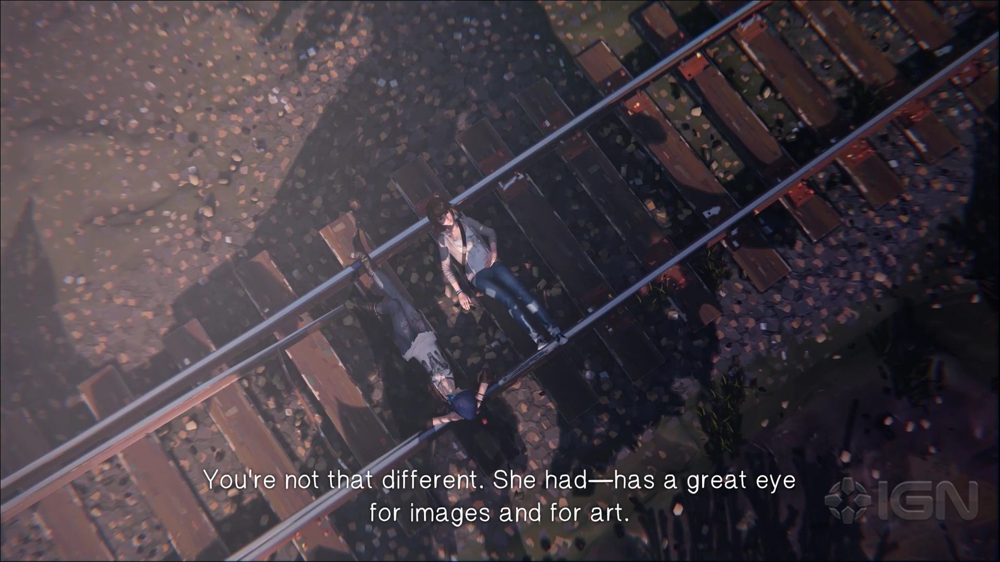Ahora que estás de vuelta en la escuela, hay varias personas con las que puedes hablar. Una de importancia es Courtney, la chica de pelo morado que está sentada detrás de una mesa en el pasillo. Si hablas con ella sobre el Vortex Club y el código de vestimenta, puedes obtener información y luego retroceder en el tiempo para mencionárselo. Esto la impresionará y podrás ser añadido a la lista para la fiesta.
El padre de Chloe está aquí, y también puedes hablar con algunas otras personas. Cuando estés listo, dirígete hacia abajo por el pasillo y entra primero en el laboratorio de ciencias. Warren está aquí, tratando de hacer un experimento científico. No importa lo que le digas, no funcionará. Sin embargo, si vas a hablar con la profesora, puedes preguntarle qué haría ella y luego transmitir esa información a Warren. Dile que agregue cloro, luego quédate unos segundos y ¡puedes conseguir la foto opcional 9!
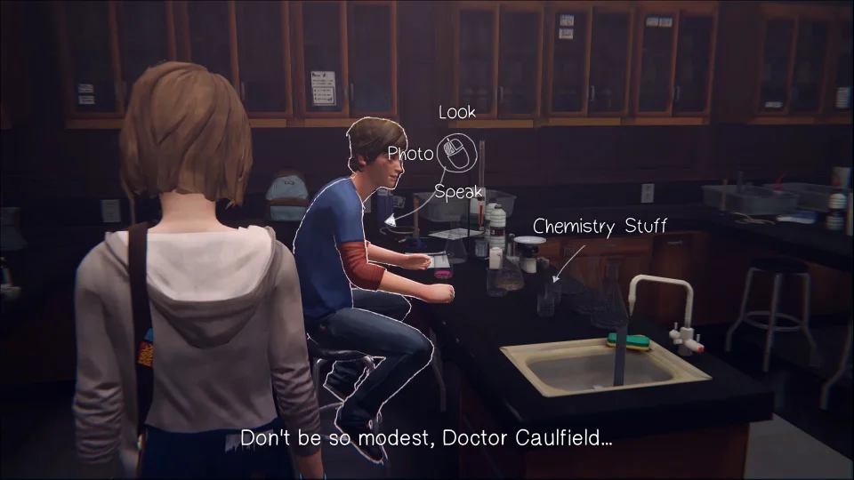Con eso hecho, puedes dirigirte a tu clase de fotografía normal. Serás detenido por tu profesor después de que termine de hablar con Kate. Puedes contarle todo lo que quieras, y dependiendo de las cosas que hayas elegido en el Episodio 1, sus reacciones pueden cambiar. Una vez que hayas terminado con él, entra en la habitación y camina directamente hacia adelante. ¡Puedes tomar una foto de la chica mirando por la ventana, lo que te permitirá obtener la foto opcional 10!
Después de tomar la foto, ve hacia la parte trasera de la clase donde está tu escritorio y habla con Nathan y Victoria. Esto desencadenará una larga escena que eventualmente termina con todos los estudiantes huyendo de la clase.
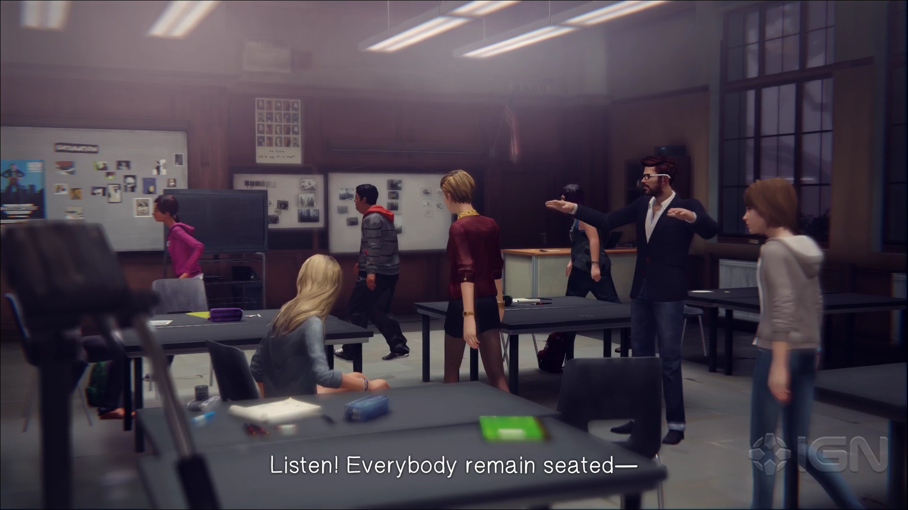La parte final del episodio tiene a todos los estudiantes reunidos alrededor de los dormitorios, mientras Kate Marsh está en el techo. La escena terminará y volverás con Max, mientras ella detiene el tiempo. Camina a través de la multitud y hasta la puerta principal de los dormitorios y el juego te indicará que vayas al techo.
Como podrías sospechar, la siguiente conversación es bastante importante. Además, hay puntos anteriores en el juego que pueden afectar esta conversación. Si deseas salvarla, deberás haber hecho varias cosas en los capítulos anteriores para mostrar que te preocupas por ella, como contestar el teléfono en el Diner en este episodio, o defenderla en el Episodio 1. A continuación, se muestra una lista de las opciones de diálogo siguientes que te llevarán a salvar a Kate: Tú importas, no solo para mí. Eres mi amiga. Nathan está involucrado. Sé fuerte. Tu padre (tus hermanas también funcionarán). Si eliges estas opciones y has hecho cosas para ayudar a Kate anteriormente, ella bajará y te abrazará. Si no...
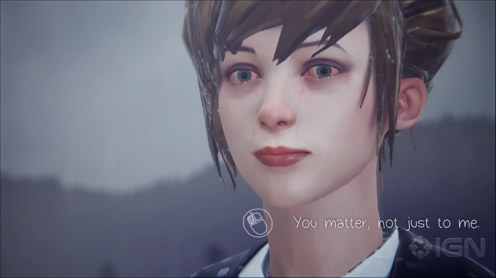Esto llevará a una serie de escenas, terminando contigo en la oficina del director con Nathan. Mientras estás aquí, tienes la oportunidad de acusar a Nathan, o puedes guardar silencio sobre los eventos. Sea lo que sea lo que suceda, eventualmente terminarás afuera con Warren, y el Episodio 2: Fuera de Tiempo llegará a su fin.
InicioEpisodio 1: CrisalidaVolver arribaEpisodio 3: Teoría del caosEpisodio 4: Cuarto oscuroEpisodio 5: Polarizado